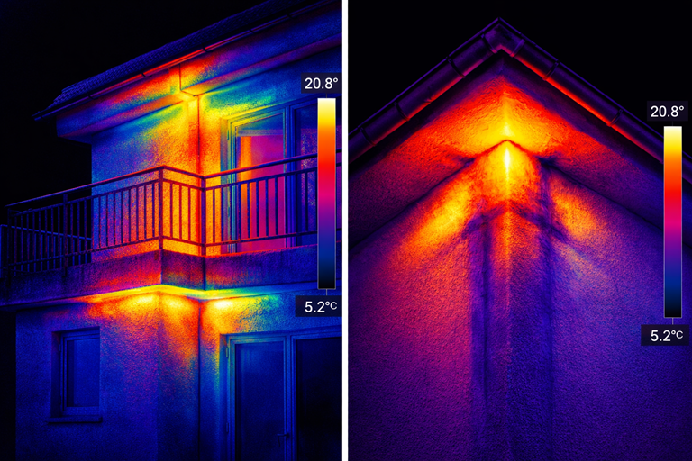
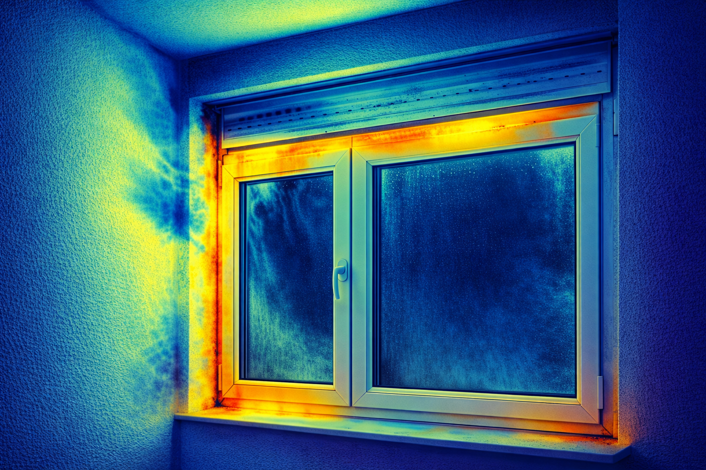
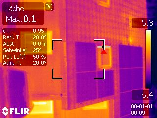
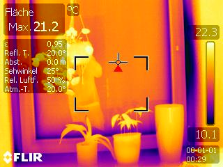
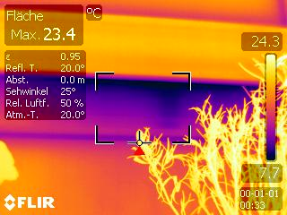
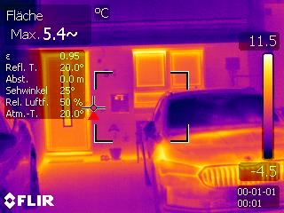

Gallerie
Beispiele unserer thermografischen AnalysenHier sehen Sie eine Auswahl von Thermografie-Aufnahmen aus unserer Praxis. Die Bilder zeigen typische Schwachstellen wie Wärmebrücken, undichte Fenster und mangelhafte Dämmung.

Fassaden- und Balkonanalyse

Fenster- und Anschlussdetails

Dach mit Solaranlage

Seitlicher Wärmeverlust am Fenster

Undichtes Fenster

Wärmeverlust am Hauseingang